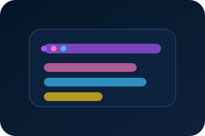

Offline Workflow
Service worker caches UI + API calls. Notes persist in IndexedDB with background sync pushing updates when connectivity returns.
PWA - Productivity
Minimalist note app that is installable, offline-ready, and optimized for keyboard workflows with instant search + tagging.

Service worker caches UI + API calls. Notes persist in IndexedDB with background sync pushing updates when connectivity returns.
Command palette, fuzzy search, and tag filters keep context switching minimal.
Neon gradients + glassmorphism surfaces echo the main site aesthetic and keep the experience playful.
Conflict-free syncing and offline states demanded thoughtful state management and telemetry.
Reach out if you want to extend Neon Notes or integrate it with your workflow.